NCCL Device API 与 GIN：从通信对象到 DeepEP V2
基础篇 C · 目标：理解 communicator、window、team、context 和完成语义，沿代码解释 V2 的 direct/hybrid 路径，并知道哪些接口受版本影响。
研究日期：2026-09-23。DeepEP 代码以本地 01dc3aaac82068020353dce2c302e38153c0bfaa 源码基线为准；访问时 NCCL 在线文档标识为 2.31.2。本篇同时链接 2.30.7 归档，用于核对项目使用的接口。在线最新指南不代表本地二进制已经升级。
六篇目录 · 前置：IBGDA · 对应实现：V2 Elastic
1. 从熟悉的 NCCL host collective 出发
常见训练代码在 host 上调用 NCCL collective，由库安排通信 kernel。Device API 则允许自定义 CUDA kernel 使用 NCCL 提供的通信资源。要理解 DeepEP V2，先分清“通信算法由谁组织”和“网络资源由谁提供”：V2 自己编排 token 路由、队列与规约，NCCL 提供 communicator、注册窗口、可访问域及 GIN 接口。官方入口
这使通信可以和 routing、pack、TMA、reduce 放进同一套设备端执行流程，但不会自动消除所有 SM 成本。V2 的 resource 估算、warp 分工与 epilogue 仍然需要阅读实际代码。
2. 三种实现抽象放在同一张表
| 层次 | V1 normal | V1 Low-Latency | V2 Elastic |
|---|---|---|---|
| 应用入口 | Buffer.dispatch/combine |
low_latency_dispatch/combine |
ElasticBuffer.dispatch/combine |
| 地址模型 | IPC peer pointer + NVSHMEM heap | 全局 PE 的 heap + P2P bypass | NCCL window + offset + team peer |
| 网络接口 | DeepEP IBGDA helper | 同一个 IBGDA helper | handle::NCCLGin 封装 |
| 队列粒度 | channel/chunk/ring | expert/source 固定槽 | direct 或 hybrid 的 slot、队列与 context |
| GPU 调度 | 常驻通信 blocks | SEND/RECV 可拆 | 主通信 kernel 与 epilogue |
| 集成方向 | 吞吐优化 | decode overlap | 统一 EP 模式与更灵活拓扑 |
本表依据三篇本地实现解析及对应源码。GIN 不等于 NVSHMEM IBGDA：API 与资源管理不同，底层却可以采用相关的 GPU 驱动 NIC 技术。接口抽象与物理后端应分别研究。
3. 核心对象：先看 host，再看 device

查看 Mermaid 图源码
flowchart LR
A[Host ncclComm_t] --> B[查询 properties]
B --> C[填写 device requirements]
C --> D[ncclDevCommCreate]
A --> E[分配 symmetric memory]
E --> F[注册 ncclWindow]
D --> G[CUDA kernel 参数]
F --> G
G --> H[handle::NCCLGin]
H --> I[LSA pointer load/store]
H --> J[GIN put/get/signal]| 对象 | 在项目中负责什么 | 阅读位置 |
|---|---|---|
| host communicator | rank/world、bootstrap 和资源生命周期 | nccl.cu |
| device communicator | kernel 可用的团队与通信资源 | nccl.cu |
| window | 已注册地址范围及设备映射 | nccl.cu |
| team | peer 编号的坐标域 | handle.cuh |
| context | GIN 操作使用的资源上下文 | NCCLGin 构造 |
| signal/counter | 远端通知与本地完成相关状态 | comm.cuh |
4. 源码精读一：能力查询和资源申请
来自 NCCLSymmetricMemoryContext，省略失败信息与个别资源字段：
ncclCommProperties props = NCCL_COMM_PROPERTIES_INITIALIZER;
NCCL_CHECK(ncclCommQueryProperties(comm, &props));
ncclDevCommRequirements_t reqs = NCCL_DEV_COMM_REQUIREMENTS_INITIALIZER;
if (num_ranks > 1 and get_env("EP_DISABLE_GIN", 0) == 0) {
// ... 检查 props.ginType 或 props.railedGinType ...
reqs.ginContextCount = num_allocated_qps;
reqs.ginExclusiveContexts = true;
reqs.ginQueueDepth = kGinQPDepth;
reqs.ginTrafficClass = sl_idx;
reqs.ginSignalCount = num_ranks + 2 * 2;
reqs.ginConnectionType = allow_hybrid_mode
? NCCL_GIN_CONNECTION_RAIL : NCCL_GIN_CONNECTION_FULL;
}props 回答系统提供什么，reqs 描述 kernel 要用什么。context count 与信号数量必须覆盖实际 kernel 的使用范围。ginExclusiveContexts 表达资源共享要求；不能把增加 context 当作没有成本的调参。
EP_DISABLE_GIN 跳过申请，不提供另一套跨节点算法。allow_hybrid_mode 会同时影响拓扑、peer 坐标与连接类型；在不支持 FULL 可达性的网络上直接关闭 hybrid，可能初始化失败。
4.1 编译版本与运行版本
同一文件中的 #if NCCL_VERSION_CODE >= NCCL_VERSION(2, 31, 0) 分支设置 useRuntimeVersion 并按运行时尺寸分配 device communicator；旧分支检查编译与运行 NCCL 版本相同。这个分支是项目做的兼容处理，不是所有 device kernel 任意跨版本兼容的证明。实际代码
升级实验至少记录 host 编译头文件、device 编译/JIT 使用头文件、加载的 libnccl 和缓存是否重建。GIN 内部结构被直接访问时，尤其要复核这些边界。
5. 源码精读二：注册窗口和对称偏移
项目先分配自己的 symmetric memory，再注册窗口，而非直接复制官方示例的分配方式。源码
this->symmetric_memory = symmetric::alloc(
num_bytes - num_cpu_bytes, num_cpu_bytes,
allow_hybrid_mode, num_scaleup_ranks, scaleout_rank_idx,
cpu_comm);
raw_window_ptr = this->symmetric_memory->ptr;
NCCL_CHECK(ncclCommWindowRegister(
comm, raw_window_ptr, this->symmetric_memory->num_bytes,
&window, NCCL_WIN_STRICT_ORDERING));
NCCL_CHECK(ncclGetLsaDevicePointer(window, 0, nvl_rank_idx,
&mapped_window_ptr));第一段区分 GPU 与 CPU 容量；第二段让窗口覆盖实际分配区；第三段获取当前 LSA 视角的映射。项目注释说明 window registration 是 collective，所以必须协调各 rank 的调用顺序。
NCCL_WIN_STRICT_ORDERING 与项目使用的 VA signal 有关联，但它不会自动给任意裸指针写提供应用层完成协议。通信正确性还依赖后文的 put、通知和等待。
6. World、LSA、Rail 与 FULL/RAIL
DeepEP 从 NCCL 的 LSA 大小计算物理域：num_rdma_ranks = num_ranks / num_nvl_ranks。这里的前者表示域的数量，不是 NIC 的数量。源码
以下用 2 个域、每域 4 个 rank 做教学示例，假定连续 rank 排布满足项目断言：

查看 Mermaid 图源码
flowchart LR
subgraph L0[LSA 域 0]
A0[rank 0] --- A1[rank 1]
A1 --- A2[rank 2]
A2 --- A3[rank 3]
end
subgraph L1[LSA 域 1]
B0[rank 4] --- B1[rank 5]
B1 --- B2[rank 6]
B2 --- B3[rank 7]
end
A0 -. Rail 0 .-> B0
A1 -. Rail 1 .-> B1
A2 -. Rail 2 .-> B2
A3 -. Rail 3 .-> B3rank 2 的 LSA peer 1 是全局 rank 1；在它的 rail 中，peer 1 则对应全局 rank 6。同一个整数必须带着 team 解读。真实机器是否满足这种排布由初始化查询与断言决定，不能只凭服务器 hostname 推定 LSA。
FULL 允许需要的全互联 peer 路径；RAIL 约束跨域同 rail 通信，域内再 fan-out。V2 direct 将逻辑 scale-up 扩成 world，并按指针可达性选择路径；hybrid 保留两级逻辑域。逻辑域代码
7. 源码精读三：一次 GIN put 的参数
handle::NCCLGin::put 把指针改写成 window offset，主要实参如下：
gin.put(TEAM_WORLD_RAIL(),
dst_rank_idx,
nccl_window, reinterpret_cast<int64_t>(recv_sym_ptr) - lsa_base_ptr,
nccl_window, reinterpret_cast<int64_t>(send_sym_ptr) - lsa_base_ptr,
num_bytes,
remote_action,
ncclGin_None(),
ncclCoopThread(),
ncclGin_None(),
cuda::thread_scope_thread,
cuda::thread_scope_device,
ncclGinOptFlagsDefault | extra_options);| 参数组 | 代码含义 | 阅读检查点 |
|---|---|---|
| team + peer | 在 world 或 rail 内选择目标 | peer 编号是否属于该 team |
| remote window + offset | 目标在注册区内的位置 | 是否越过 token/slot 边界 |
| local window + offset | NIC 消费的源位置 | source buffer 是否过早复用 |
| bytes | 本次传输长度 | 是否包含 metadata/scale/padding |
| remote action | 数据关联的远端通知 | 默认 None 时通知在哪里建立 |
| coop / scope | 参与线程与内存作用域 | 是否真的满足发布前提 |
函数注释提示，通过此 put API 发本地/NVLink 数据也会经过 NIC。V2 为此先尝试 get_sym_ptr，对可直接访问的 peer 使用另一条 load/store/TMA 路径。不能认为 gin.put 自动等价于最优 NVLink copy。
8. 完成语义：用四个问题检查协议
先问：请求是否已提交？再问：源 buffer 是否可复用？随后问：远端 payload 是否可见？最后问：所有参与者是否已到达算法边界？这四件事分别需要证据。
flush 对 put 保证本地输入被消费，不承诺远端完成。附着在 put 上的 signal 可用于确认相应数据可见；strong signal 还覆盖同 peer、同 context 的前序 put，weak signal 的覆盖更窄。旧 signal 类型的行为与 communicator 配置有关。GIN 2.30.7 · GIN 当前参考
下面是教学状态图，不是替代 API 的可编译代码：

查看 Mermaid 图源码
stateDiagram-v2
[*] --> Prepared: 源数据写好
Prepared --> Issued: 提交 put
Issued --> SourceReusable: 本地完成机制
Issued --> RemoteVisible: 正确的远端通知协议
RemoteVisible --> Consumed: 接收方处理
SourceReusable --> NextSend: 源槽可供下一次发送
Consumed --> Recyclable: 归还应用层 credit两条分支强调源槽与目标槽有独立生命周期。网络完成也不等于接收端的 GEMM 已结束。设计 ring 时必须让消费者显式归还 credit，不能用发送方的 flush 代替。
9. 源码精读四：DeepEP 的自定义 barrier
gin_barrier_wo_local_sync 将完成协议分成若干阶段：各 warp flush 分配给自己的 context；必要时执行 system fence；grid/CTA 汇合；使用 QP 0 发送 barrier signal；接收方等待每个来源的目标值。
for (int i = global_warp_idx; i < num_qps; i += kNumSMs * kNumWarps) {
ncclGin(nccl_dev_comm, i, NCCL_GIN_RESOURCE_SHARING_CTA)
.flush(ncclCoopWarp());
}
// ... system fence、grid 同步以及 barrier signal 发布 ...
const auto gdaki = static_cast<struct ncclGinGdakiGPUContext*>(
gin._ginHandle) + gin.contextId;它随后读取 GDAKI 内部 signals table，并用 timeout_while 实现超时诊断。由此可以确认：当前源码的这条等待路径耦合 GDAKI 内部布局。即使 host 只检查 GIN 不为 NONE，也不能直接宣称 Proxy 后端可运行整个 V2。
这一段应当按完整协议审查，特别关注多 context 的 flush、signal 类型和版本保证如何组合。单独摘一句 flush 然后写成“所有远端已完成”会丢掉核心条件。研究修改时要一起检查 gpu_barrier 的首尾同步和调用者资源范围。
10. 如何对应 V2 direct 与 hybrid

查看 Mermaid 图源码
flowchart TB
A[输入 hidden 与 top-k] --> B{direct 或 hybrid}
B -->|direct| C[按目标 rank 分配 slot]
C --> D{目标有直接对称指针}
D -->|有| E[域内 copy / TMA]
D -->|无| F[World GIN put]
B -->|hybrid| G[先按目标域组织消息]
G --> H[Rail GIN put]
H --> I[目标域 NVLink fan-out]
E --> J[完成协议与 copy epilogue]
F --> J
I --> J
J --> K[expert 计算]
K --> L[combine 通信及 reduce epilogue]**Direct：**阅读 dispatch.cuh。一个 token 先获得目标槽，再按地址可达性选择写法。主路径的 put 可以没有附着 signal，最终以末尾 barrier 等协议完成；不能在图里擅自给每个 put 加 signal。
**Hybrid：**阅读 hybrid_dispatch.cuh。跨域消息通过 rail，目标域内再分发。收益来自减少重复跨域数据与配合网络拓扑，代价包括中间缓冲、队列状态和转发工作。
**Combine：**阅读 combine.cuh 与 combine_reduce_epilogue.cuh。输入布局和 allow_multiple_reduction 决定部分和在哪里形成；尾部 epilogue 把通信区结果规约到用户输出。这不是把 dispatch 箭头倒过来就能解释的过程。
11. JIT、TMA 与 stream 如何接上
V2 的 host launcher 把 hidden、拓扑、模式、SM/QP 等转成模板实例。编译缓存减少重复编译，第一次调用成本应与稳态通信性能分开。JIT 编译器 · launch runtime
TMA 是数据搬运机制，GIN 是网络通信接口，两者在 staging 和 epilogue 中配合。TMA copy 完成需要相应 barrier/proxy 同步；不能把 CUDA stream 上的 launch 顺序当成 kernel 内全部异步 copy 已完成的证明。具体顺序见 V2 实现正文。
stream_control_prologue/epilogue 管理调用者 stream 与通信 stream 的依赖、事件以及 tensor 生命周期。通信完成事件和 PyTorch allocator 的 record_stream 解决不同问题：一个决定何时能用结果，另一个防止存储过早回收。C++ 编排
12. 从哪里入门：分三个小实验
| 实验 | 只改变什么 | 先检查什么 | 从哪里读 |
|---|---|---|---|
| LSA 基础 | 小规模域内通信 | pointer/offset 与输出正确性 | handle.cuh 的 get_sym_ptr |
| direct 对 hybrid | allow_hybrid_mode，硬件须支持 |
连接能力、rank 坐标、同路由输出 | nccl.cu 与两种 dispatch |
| resource 扫描 | 一次只改变 SM 或 QP | 申请资源不少于使用资源，结果不变 | elastic.py 估算和测试参数 |
先看 官方 Device API 学习入口 的 LSA 示例理解 window，再读本篇代码。之后运行项目现有测试，而不是从复杂 MoE pipeline 开始排障。
以下是已配置 Linux 八 GPU 节点上、仓库根目录的正确性检查示例。参数来自 测试 parser：
python tests/elastic/test_ep.py --num-processes 8 --num-tokens 128 --hidden 7168 --num-topk 6 --num-experts 256 --skip-perf-test --test-first-only它只覆盖选定的首个 case，不是完整回归测试。后续去掉 --test-first-only 扩大正确性覆盖，再开启性能测量；比较时固定 token、top-k、expert 分布、dtype、cache 模式和输出布局。
13. 六个容易读错的细节
- LSA 不等于一台传统服务器。 它是 NCCL 查询出的可直接访问域，项目按域大小构造逻辑坐标。
- context 不应直接理解成一块物理 NIC。 软件资源索引与硬件映射由后端决定。
do_cpu_sync=False不提供真实 host token 数。 部分输出尺寸是容量，GPU metadata 才描述有效数据。- GIN
put默认没有 remote action。 必须继续追踪完成通知在哪里发生。 - V2 的 low-latency 定位不等于保留 V1 recv hook。 主 kernel 和 epilogue 的调度方式不同。
- 新版本官方 API 不自动覆盖旧实现。 强弱 signal、运行时 communicator 尺寸和私有结构访问都要按版本核对。
以上可在 V2 完整实现文档 的 EPHandle、barrier、代码索引与模式对照章节进一步验证。
14. 自测与继续研究
问：什么时候使用 ncclTeamTagRail？ 当算法按同 rail 的跨域连接寻址，且资源申请为对应连接类型时。peer 必须用该 team 的坐标。
问：为什么发送端 flush 后接收端仍要等待？ flush 的本地完成不足以证明接收端数据已经可见；接收方还要遵守远端通知协议。
问：如何证明 V2 在目标环境使用哪种 backend？ 结合 properties、初始化日志和实际 kernel 路径；还要检查自定义等待对 GDAKI 的依赖。
问：如何判断一次优化有效？ 在相同正确性语义与形状下，把 JIT、初始化、steady-state 通信及完整 MoE 迭代分别计时，报告资源和误差范围。
建议阅读顺序：nccl.cu → handle.cuh → comm.cuh → direct/hybrid kernel → epilogue → test_ep.py。Host setup 的公共契约见 NCCL 官方参考。